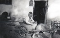

The Kleinsorge Family Tree - Person Sheet
The Kleinsorge Family Tree - Person Sheet

NameJANZ, Siegfried 
BirthJul 18, 1929, Schwartow, Germany
DeathSep 20, 2002, Holzen, Germany
FatherJANZ, Otto Fritz Franz (1902-1968)
MotherKLEINSORGE, Maria (1907-1986)
Spouses
BirthJan 5, 1931, Dortmund, Westfalen, Germany
DeathJul 29, 2015, Dortmund, Westfalen, Germany